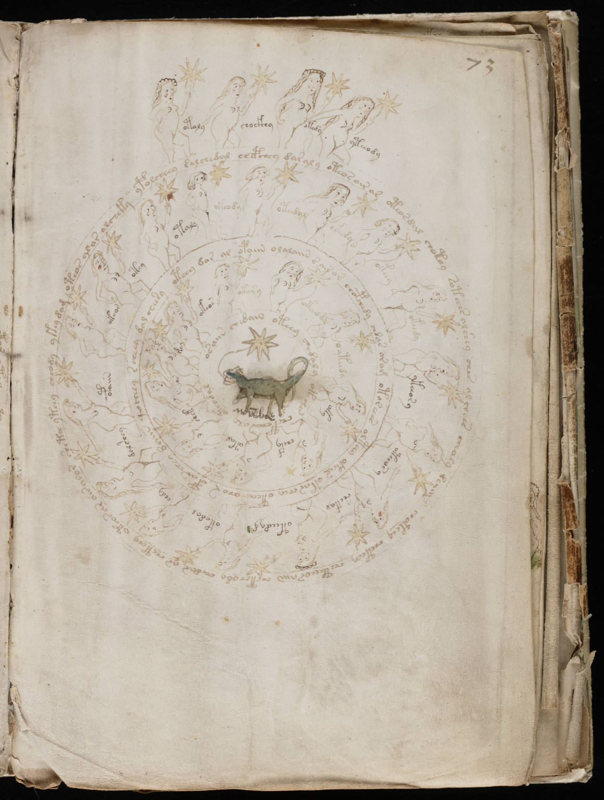

f73r
1otoly2chockhy3okedy4yteeody5ypolcheey salchedal chepchey daraly oteos air ar oteosdal chotchy soteees alshey ches al chees cheoly leiir* choteey cheteey cheteeeosaiin chetchody chedar ar cheteey oteor ar air alor shetch ytchy cheody ykeydom oteos alar alcheky 6otey7otaly8okeody9oteedyl10okesdy11okery12oksedy13ykeeory14oteeosy15shekal16oteedyg17okedal18chdy19dalshey20opaiin21okeos22oteey dar al opaiin olalaiin sair ar chopchedy chdar orom otoreees olteey okees otar chey oteas ohor opar chey daiin qoiheey scheey dal cheesy 23okeos24okary25ot*ad26ootady27oky28chefy29otal30shek31ar32kar33osaiin chedain oteey chedaly okechs chepchees aly oteodal
